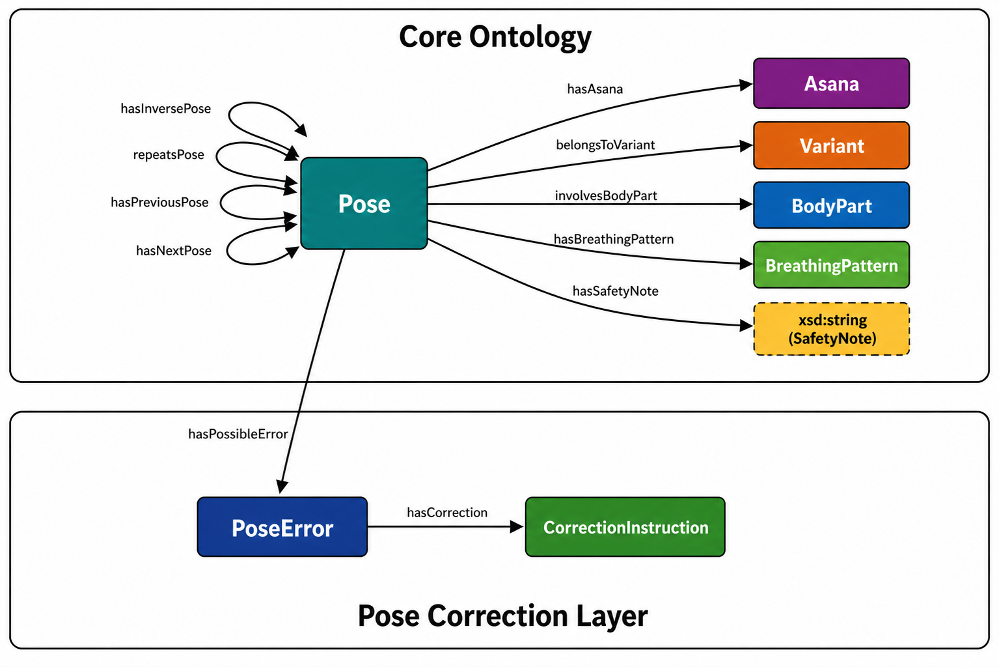

SN-YO: Surya Namaskar Yoga Ontology
Semantic Modeling | OWL | SPARQL
This ontology models Surya Namaskar as asanas, numbered pose occurrences, and sequence variants. It supports structured querying of sequence order, repeated poses, inverse relationships, support type, mantra, chakra,body parts, breathing patterns, safety notes and shared asanas across variants.
The ontology also includes a pose correction layer for the Base Surya Namaskar followed at IIT BHU. This layer models pose errors and correction instructions.

Ontology Overview
Classes
Pose
Represents one numbered occurrence of an asana within a variant sequence.
Asana
Represents a yoga asana identity independent of sequence position.
Variant
Represents a Surya Namaskar tradition or sequence variant.
BodyPart
Represents a body part involved in a pose.
BreathingPattern
Represents the breathing pattern associated with a pose.
PoseError
Represents a possible error while performing a pose.
CorrectionInstruction
Represents a correction instruction linked to an error.
Object Properties
hasAsana
Links a pose occurrence to the asana performed.
belongsToVariant
Links a pose to its Surya Namaskar variant.
hasNextPose
Links a pose to the next pose in the sequence.
hasPreviousPose
Links a pose to the previous pose in the sequence.
repeatsPose
Links poses that are repeated within a sequence.
hasInversePose
Links poses that are inverse to each other.
sameAsanaAs
Links equivalent or normalized asana identities.
involvesBodyPart
Links a pose to the body parts involved.
hasBreathingPattern
Links a pose to its associated breathing pattern.
hasPossibleError
Links a pose to possible performance errors.
hasCorrection
Links a pose error to its correction instruction.
Datatype Properties
Pose Attributes
poseNumber, hasMantra, hasChakra, hasSupportType, hasLaterality
Error & Correction Descriptions
errorDescription, correctionText, hasSafetyNote
Project Files
pyLODE Documentation
Generated ontology documentation for classes, properties, and metadata.
View DocsOntology Metadata
Registered Namespaces
core:https://ai4society.github.io/sn-yo/core#base:https://ai4society.github.io/sn-yo/base-sn#v1:https://ai4society.github.io/sn-yo/variant01#v2:https://ai4society.github.io/sn-yo/variant02#v3:https://ai4society.github.io/sn-yo/variant03#
Variants Represented
Use Cases
Compare Surya Namaskar variants across traditions.
Identify repeated poses and inverse pose relationships.
Retrieve the ordered sequence of poses in Base Surya Namaskar.
Query poses based on standing posture and support types.
Retrieve mantra and chakra metadata for Base SN poses.
Identify primary asanas shared across multiple variants.
Retrieve pose errors, body parts, breathing patterns, safety notes, and corrections.
Support competency-question based evaluation using SPARQL queries.
Competency Questions & SPARQL Queries
Interactive exploration of Competency Questions and their corresponding SPARQL queries. Click to expand and view the evaluated results.
CQ1: What are the poses in Base Surya Namaskar?
PREFIX rdf: <http://www.w3.org/1999/02/22-rdf-syntax-ns#>
PREFIX rdfs: <http://www.w3.org/2000/01/rdf-schema#>
PREFIX core: <https://ai4society.github.io/sn-yo/core#>
PREFIX base: <https://ai4society.github.io/sn-yo/base-sn#>
PREFIX v1: <https://ai4society.github.io/sn-yo/variant01#>
PREFIX v2: <https://ai4society.github.io/sn-yo/variant02#>
PREFIX v3: <https://ai4society.github.io/sn-yo/variant03#>
SELECT ?pose
WHERE {
?pose rdf:type core:Pose ;
core:belongsToVariant base:BaseSN_SivanandaYogaVedantaCentre_UsedatIITBHU .
}
ORDER BY ?poseExecution Result
| ?pose (base-sn namespace) |
|---|
| BaseSN_Pose01 |
| BaseSN_Pose02 |
| BaseSN_Pose03 |
| BaseSN_Pose04 |
| BaseSN_Pose05 |
| BaseSN_Pose06 |
| BaseSN_Pose07 |
| BaseSN_Pose08 |
| BaseSN_Pose09 |
| BaseSN_Pose10 |
| BaseSN_Pose11 |
| BaseSN_Pose12 |
CQ2: How many poses are in Base Surya Namaskar?
PREFIX rdf: <http://www.w3.org/1999/02/22-rdf-syntax-ns#>
PREFIX rdfs: <http://www.w3.org/2000/01/rdf-schema#>
PREFIX core: <https://ai4society.github.io/sn-yo/core#>
PREFIX base: <https://ai4society.github.io/sn-yo/base-sn#>
PREFIX v1: <https://ai4society.github.io/sn-yo/variant01#>
PREFIX v2: <https://ai4society.github.io/sn-yo/variant02#>
PREFIX v3: <https://ai4society.github.io/sn-yo/variant03#>
SELECT (COUNT(?pose) AS ?count)
WHERE {
?pose rdf:type core:Pose ;
core:belongsToVariant base:BaseSN_SivanandaYogaVedantaCentre_UsedatIITBHU .
}Execution Result
| ?count |
|---|
| 12 |
CQ3: Which poses are performed standing on two feet in Base Surya Namaskar?
PREFIX rdf: <http://www.w3.org/1999/02/22-rdf-syntax-ns#>
PREFIX rdfs: <http://www.w3.org/2000/01/rdf-schema#>
PREFIX core: <https://ai4society.github.io/sn-yo/core#>
PREFIX base: <https://ai4society.github.io/sn-yo/base-sn#>
PREFIX v1: <https://ai4society.github.io/sn-yo/variant01#>
PREFIX v2: <https://ai4society.github.io/sn-yo/variant02#>
PREFIX v3: <https://ai4society.github.io/sn-yo/variant03#>
SELECT ?pose
WHERE {
?pose rdf:type core:Pose ;
core:belongsToVariant base:BaseSN_SivanandaYogaVedantaCentre_UsedatIITBHU ;
core:hasSupportType "StandingTwoFeet" .
}
ORDER BY ?poseExecution Result
| ?pose |
|---|
| BaseSN_Pose01 |
| BaseSN_Pose02 |
| BaseSN_Pose11 |
| BaseSN_Pose12 |
CQ4: Which poses are repeated in Base Surya Namaskar?
PREFIX rdf: <http://www.w3.org/1999/02/22-rdf-syntax-ns#>
PREFIX rdfs: <http://www.w3.org/2000/01/rdf-schema#>
PREFIX core: <https://ai4society.github.io/sn-yo/core#>
PREFIX base: <https://ai4society.github.io/sn-yo/base-sn#>
PREFIX v1: <https://ai4society.github.io/sn-yo/variant01#>
PREFIX v2: <https://ai4society.github.io/sn-yo/variant02#>
PREFIX v3: <https://ai4society.github.io/sn-yo/variant03#>
SELECT ?pose ?repeatedPose
WHERE {
?pose core:belongsToVariant base:BaseSN_SivanandaYogaVedantaCentre_UsedatIITBHU ;
core:repeatsPose ?repeatedPose ;
core:poseNumber ?poseNum .
?repeatedPose core:poseNumber ?repeatedNum .
FILTER(?poseNum < ?repeatedNum)
}
ORDER BY ?poseNumExecution Result
| ?pose | ?repeatedPose |
|---|---|
| BaseSN_Pose01 | BaseSN_Pose12 |
| BaseSN_Pose02 | BaseSN_Pose11 |
| BaseSN_Pose03 | BaseSN_Pose10 |
| BaseSN_Pose04 | BaseSN_Pose09 |
CQ5: Which poses have inverse relationships in Base Surya Namaskar?
PREFIX rdf: <http://www.w3.org/1999/02/22-rdf-syntax-ns#>
PREFIX rdfs: <http://www.w3.org/2000/01/rdf-schema#>
PREFIX core: <https://ai4society.github.io/sn-yo/core#>
PREFIX base: <https://ai4society.github.io/sn-yo/base-sn#>
PREFIX v1: <https://ai4society.github.io/sn-yo/variant01#>
PREFIX v2: <https://ai4society.github.io/sn-yo/variant02#>
PREFIX v3: <https://ai4society.github.io/sn-yo/variant03#>
SELECT ?pose ?inversePose
WHERE {
?pose core:belongsToVariant base:BaseSN_SivanandaYogaVedantaCentre_UsedatIITBHU ;
core:hasInversePose ?inversePose ;
core:poseNumber ?poseNum .
?inversePose core:poseNumber ?inverseNum .
FILTER(?poseNum < ?inverseNum)
}
ORDER BY ?poseNumExecution Result
| ?pose | ?inversePose |
|---|---|
| BaseSN_Pose04 | BaseSN_Pose09 |
CQ6: Which asanas are shared across multiple variants?
PREFIX rdf: <http://www.w3.org/1999/02/22-rdf-syntax-ns#>
PREFIX rdfs: <http://www.w3.org/2000/01/rdf-schema#>
PREFIX core: <https://ai4society.github.io/sn-yo/core#>
PREFIX base: <https://ai4society.github.io/sn-yo/base-sn#>
PREFIX v1: <https://ai4society.github.io/sn-yo/variant01#>
PREFIX v2: <https://ai4society.github.io/sn-yo/variant02#>
PREFIX v3: <https://ai4society.github.io/sn-yo/variant03#>
SELECT ?asana (COUNT(DISTINCT ?variant) AS ?varCount)
WHERE {
?pose rdf:type core:Pose ;
core:hasAsana ?asana ;
core:belongsToVariant ?variant .
}
GROUP BY ?asana
HAVING (COUNT(DISTINCT ?variant) > 1)
ORDER BY DESC(?varCount) ?asanaExecution Result
| ?asana | ?varCount |
|---|---|
| Pranamasana | 3 |
| HastaUtthanasana | 3 |
| Padahastasana | 3 |
| AshwaSanchalanasana | 3 |
| Bhujangasana | 3 |
| Parvatasana | 3 |
| ChaturangaDandasana | 2 |
| AshtangaNamaskara | 2 |
CQ7: What is the sequence order of poses in Base Surya Namaskar?
PREFIX rdf: <http://www.w3.org/1999/02/22-rdf-syntax-ns#>
PREFIX rdfs: <http://www.w3.org/2000/01/rdf-schema#>
PREFIX core: <https://ai4society.github.io/sn-yo/core#>
PREFIX base: <https://ai4society.github.io/sn-yo/base-sn#>
PREFIX v1: <https://ai4society.github.io/sn-yo/variant01#>
PREFIX v2: <https://ai4society.github.io/sn-yo/variant02#>
PREFIX v3: <https://ai4society.github.io/sn-yo/variant03#>
SELECT ?pose ?nextPose
WHERE {
?pose core:belongsToVariant base:BaseSN_SivanandaYogaVedantaCentre_UsedatIITBHU ;
core:hasNextPose ?nextPose .
}
ORDER BY ?poseExecution Result
| ?pose | ?nextPose |
|---|---|
| BaseSN_Pose01 | BaseSN_Pose02 |
| BaseSN_Pose02 | BaseSN_Pose03 |
| BaseSN_Pose03 | BaseSN_Pose04 |
| BaseSN_Pose04 | BaseSN_Pose05 |
| BaseSN_Pose05 | BaseSN_Pose06 |
| BaseSN_Pose06 | BaseSN_Pose07 |
| BaseSN_Pose07 | BaseSN_Pose08 |
| BaseSN_Pose08 | BaseSN_Pose09 |
| BaseSN_Pose09 | BaseSN_Pose10 |
| BaseSN_Pose10 | BaseSN_Pose11 |
| BaseSN_Pose11 | BaseSN_Pose12 |
CQ8: Which common errors can occur in each pose of Base Surya Namaskar, and how can they be corrected?
PREFIX rdf: <http://www.w3.org/1999/02/22-rdf-syntax-ns#>
PREFIX rdfs: <http://www.w3.org/2000/01/rdf-schema#>
PREFIX core: <https://ai4society.github.io/sn-yo/core#>
PREFIX base: <https://ai4society.github.io/sn-yo/base-sn#>
PREFIX v1: <https://ai4society.github.io/sn-yo/variant01#>
PREFIX v2: <https://ai4society.github.io/sn-yo/variant02#>
PREFIX v3: <https://ai4society.github.io/sn-yo/variant03#>
SELECT ?pose ?asana ?error ?instruction
WHERE {
?pose core:belongsToVariant base:BaseSN_SivanandaYogaVedantaCentre_UsedatIITBHU ;
core:hasAsana ?asana ;
core:hasPossibleError ?error .
?error core:hasCorrection ?instruction .
}
ORDER BY ?pose ?errorExecution Result
| Pose | Asana | Error | Instruction |
|---|---|---|---|
| BaseSN_Pose01 | Pranamasana | CollapsedChestError | LiftChestForwardUpwardInstruction |
| BaseSN_Pose01 | Pranamasana | CollapsedChestError | LiftChestInstruction |
| BaseSN_Pose01 | Pranamasana | CollapsedChestError | LiftChestForwardInstruction |
| BaseSN_Pose01 | Pranamasana | PalmsMisalignedError | AlignPalmsAtChestInstruction |
| BaseSN_Pose01 | Pranamasana | RoundedShouldersError | RelaxShouldersInstruction |
| BaseSN_Pose01 | Pranamasana | UnevenWeightError | BalanceWeightEvenlyInstruction |
| BaseSN_Pose02 | HastaUtthanasana | BentArmsError | KeepArmsStraightInstruction |
| BaseSN_Pose02 | HastaUtthanasana | LowerBackOverarchingError | LiftUpwardFirstInstruction |
| BaseSN_Pose02 | HastaUtthanasana | LowerBackOverarchingError | LengthenSpineInstruction |
| BaseSN_Pose02 | HastaUtthanasana | LowerBackOverarchingError | GentleBackbendInstruction |
| BaseSN_Pose02 | HastaUtthanasana | NeckStrainError | LengthenSpineInstruction |
| BaseSN_Pose02 | HastaUtthanasana | RaisedShouldersError | RelaxShouldersInstruction |
| BaseSN_Pose03 | Padahastasana | ExcessiveKneeBendError | SoftenKneesInstruction |
| BaseSN_Pose03 | Padahastasana | RoundedBackError | BendFromHipsInstruction |
| BaseSN_Pose03 | Padahastasana | RoundedBackError | LengthenSpineInstruction |
| BaseSN_Pose03 | Padahastasana | WeightOnHeelsOnlyError | DistributeWeightEvenlyInstruction |
| BaseSN_Pose04 | AshwaSanchalanasana | CollapsedChestError | LiftChestForwardUpwardInstruction |
| BaseSN_Pose04 | AshwaSanchalanasana | CollapsedChestError | LiftChestInstruction |
| BaseSN_Pose04 | AshwaSanchalanasana | CollapsedChestError | LiftChestForwardInstruction |
| BaseSN_Pose04 | AshwaSanchalanasana | KneeBeyondAnkleError | AlignFrontKneeInstruction |
| BaseSN_Pose04 | AshwaSanchalanasana | WeakBackLegError | ExtendBackLegInstruction |
| BaseSN_Pose05 | ChaturangaDandasana | ElbowsFlaredError | TuckElbowsInstruction |
| BaseSN_Pose05 | ChaturangaDandasana | RaisedHipsError | KeepBodyAlignedInstruction |
| BaseSN_Pose05 | ChaturangaDandasana | SaggingHipsError | EngageCoreInstruction |
| BaseSN_Pose05 | ChaturangaDandasana | SaggingHipsError | KeepBodyAlignedInstruction |
| BaseSN_Pose06 | AshtangaNamaskara | ChestNotLoweredError | LowerChestProperlyInstruction |
| BaseSN_Pose06 | AshtangaNamaskara | ElbowsWideError | KeepElbowsCloseInstruction |
| BaseSN_Pose06 | AshtangaNamaskara | HipsDroppedFullyError | MaintainHipPositionInstruction |
| BaseSN_Pose07 | Bhujangasana | CompressedLowerBackError | LengthenSpineInstruction |
| BaseSN_Pose07 | Bhujangasana | OverextensionError | GentleBackbendInstruction |
| BaseSN_Pose07 | Bhujangasana | ShoulderTensionError | RelaxShouldersInstruction |
| BaseSN_Pose08 | Parvatasana | RoundedBackError | BendFromHipsInstruction |
| BaseSN_Pose08 | Parvatasana | RoundedBackError | LengthenSpineInstruction |
| BaseSN_Pose08 | Parvatasana | UnstableLegsError | StabilizeLegsInstruction |
| BaseSN_Pose08 | Parvatasana | WristOverloadError | PushHipsUpwardInstruction |
| BaseSN_Pose08 | Parvatasana | WristOverloadError | DistributeWeightEvenlyInstruction |
| BaseSN_Pose09 | AshwaSanchalanasana | CollapsedChestError | LiftChestForwardUpwardInstruction |
| BaseSN_Pose09 | AshwaSanchalanasana | CollapsedChestError | LiftChestInstruction |
| BaseSN_Pose09 | AshwaSanchalanasana | CollapsedChestError | LiftChestForwardInstruction |
| BaseSN_Pose09 | AshwaSanchalanasana | KneeBeyondAnkleError | AlignFrontKneeInstruction |
| BaseSN_Pose09 | AshwaSanchalanasana | WeakBackLegError | ExtendBackLegInstruction |
| BaseSN_Pose10 | Padahastasana | ExcessiveKneeBendError | SoftenKneesInstruction |
| BaseSN_Pose10 | Padahastasana | RoundedBackError | BendFromHipsInstruction |
| BaseSN_Pose10 | Padahastasana | RoundedBackError | LengthenSpineInstruction |
| BaseSN_Pose11 | HastaUtthanasana | CompressedLowerBackError | LengthenSpineInstruction |
| BaseSN_Pose11 | HastaUtthanasana | ShoulderTensionError | RelaxShouldersInstruction |
| BaseSN_Pose12 | Pranamasana | CollapsedPostureError | CenterBodyInstruction |
| BaseSN_Pose12 | Pranamasana | CollapsedPostureError | LiftChestInstruction |
| BaseSN_Pose12 | Pranamasana | PoorBalanceError | CenterBodyInstruction |
CQ9: What are the poses in the Base Surya Namaskar sequence, along with their associated asanas, breathing patterns, and safety notes?
PREFIX rdf: <http://www.w3.org/1999/02/22-rdf-syntax-ns#>
PREFIX rdfs: <http://www.w3.org/2000/01/rdf-schema#>
PREFIX core: <https://ai4society.github.io/sn-yo/core#>
PREFIX base: <https://ai4society.github.io/sn-yo/base-sn#>
PREFIX v1: <https://ai4society.github.io/sn-yo/variant01#>
PREFIX v2: <https://ai4society.github.io/sn-yo/variant02#>
PREFIX v3: <https://ai4society.github.io/sn-yo/variant03#>
SELECT ?poseNumber ?pose ?asana ?breathing ?safetyNote
WHERE {
?pose rdf:type core:Pose ;
core:belongsToVariant base:BaseSN_SivanandaYogaVedantaCentre_UsedatIITBHU ;
core:poseNumber ?poseNumber ;
core:hasAsana ?asana ;
core:hasBreathingPattern ?breathing ;
core:hasSafetyNote ?safetyNote .
}
ORDER BY ?poseNumber
Execution Result
| Pose Number | Pose | Asana | Breathing | Safety Note |
|---|---|---|---|---|
| 1 | BaseSN_Pose01 | Pranamasana | Exhale | Stand upright with balanced weight and avoid locking the knees. |
| 2 | BaseSN_Pose02 | Hasta Utthanasana | Inhale | Lift the chest upward with control and avoid compressing the lower back during the backbend. |
| 3 | BaseSN_Pose03 | Padahastasana | Exhale | Avoid deep forward bending in case of back pain or tight hamstrings; keep the knees slightly bent and spine long. |
| 4 | BaseSN_Pose04 | Ashwa Sanchalanasana | Inhale | Keep the front knee aligned over the ankle and place the back knee gently on the floor. |
| 5 | BaseSN_Pose05 | Chaturanga Dandasana | Hold | Maintain a straight body line from head to heels and avoid sagging or lifting the hips excessively. |
| 6 | BaseSN_Pose06 | Ashtanga Namaskara | Exhale | Lower the body gradually with control and distribute weight evenly across the eight contact points. |
| 7 | BaseSN_Pose07 | Bhujangasana | Inhale | Lift the chest gently without forcing the backbend and keep the shoulders relaxed. |
| 8 | BaseSN_Pose08 | Parvatasana | Exhale | Lengthen the spine and avoid rounding the back; press the heels down gently without forcing. |
| 9 | BaseSN_Pose09 | Ashwa Sanchalanasana | Inhale | Step forward smoothly and ensure proper alignment of the front knee over the ankle. |
| 10 | BaseSN_Pose10 | Padahastasana | Exhale | Move into the forward bend with control and avoid overstretching the hamstrings. |
| 11 | BaseSN_Pose11 | Hasta Utthanasana | Inhale | Rise upward with control and extend the chest without collapsing into the lower back. |
| 12 | BaseSN_Pose12 | Pranamasana | Exhale | Return to a steady standing posture and maintain relaxed, even breathing. |
Visual Resources
Ontology Diagram
High-level mapping of the core ontology concepts and their relationships. Click to expand.

Interactive Visualization
Dynamic web-based visualization of the ontology mapping. Click the image to expand the high-resolution view.
Open WebVOWL Tool ↗
Contributors
Surya Namaskar Ontology Research Team
Mansi Dodiya1 Kishan Kumar1 Bharath Muppasani2 Biplav Srivastava2 Raghava Mutharaju3 Hari Prabhat Gupta1
Acknowledgements
We thank Vivek Kumar, Abhishek Verma, Himanshu Sahu, Kush Pandey (Yoga Instructor), Priya Gautam (Project Coordination), for their help with the project.
The project was partially supported by Govt of India's Vaibhav Fellowship to Biplav Srivastava (visitor) and Hari P Gupta (host).
Reference 1. Kumar, V., Sahu, H., Gupta, H.P. and Srivastava, B., 2025. Technology-assisted Personalized Yoga for Better Health--Challenges and Outlook. arXiv:2508.18283 .
Reference 2. Ministry of Ayush, Government of India. Common Yoga Protocol (English) .